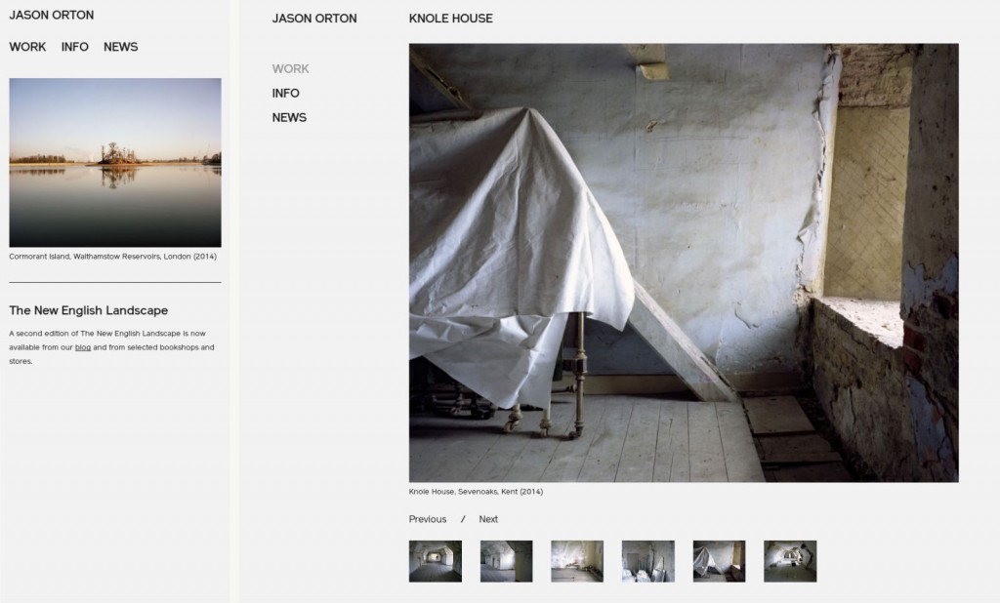
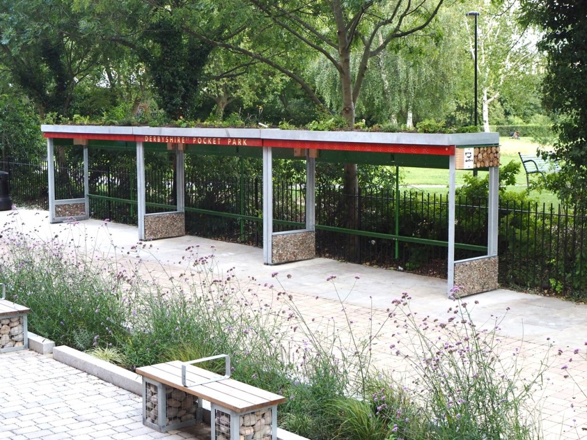
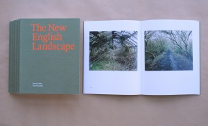
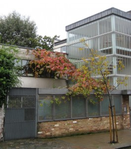
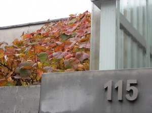
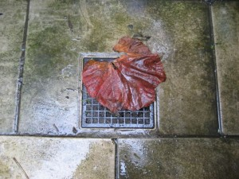
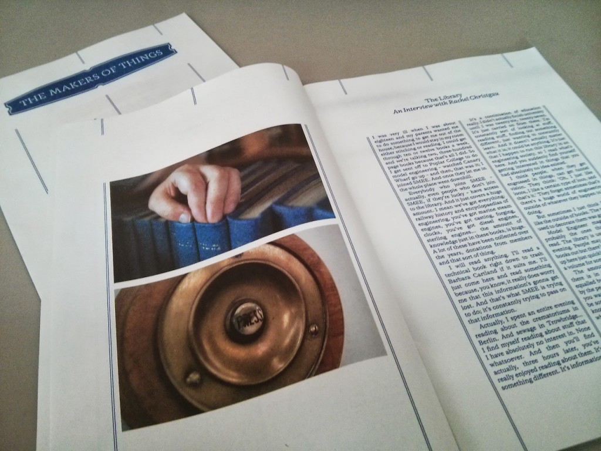
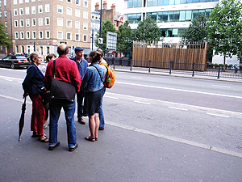
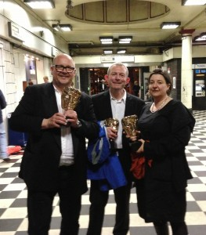

The photographer Jason Orton, last mentioned here in connection with the book The New English Landscape which carries his images, text by Ken Worpole and was designed by co-op member Peter Brawne, now has a new website. This was created by fellow member Ben Edmonds of We Sort.

Functioning largely as a portfolio of photos, the site appearance changes depending which sort of device — desk- or lap-top computer, tablet or mobile phone — it is viewed on. While fulfilling this need for a mutable appearance, Ben also achieved the aim of having a simple, pared-back look ensuring the viewer focuses on the photography.
View Jason’s site here: jasonorton.com
One day last week Green Roof Shelters installed covers for cycle parking in Bethnal Green.

(The cycle racks were to be installed next day by others!)
This new ‘pocket park’ is to be used as an exemplar of sustainable urban drainage design. The aim of sustainable urban drainage is that rain water doesn’t run off roads and pavements into our overloaded city drains. Instead the rain is used on green roofs, or runs into planting beds, or simply soaks into water-permeable paving. All these methods, and more, are used in Derbyshire Street Pocket Park. The shelters also provide lots of habitat for birds and beneficial pollinating insects.
Post-Christmas, we held our annual film-clip night amidst beer and snacks. The theme this time was ‘work’. Choices ranged from the serious to the slapstick with documentary, animation, and mainstream all making an appearance. Here are the films from which the extracts were taken:
- Robin chose, and in his absence we showed Man of Marble, directed by Andrzej Wajda, 1976
Lisa showed Slacker, directed by Richard Linklater, 1991
Dan showed Manufactured Landscapes, directed by Jennifer Baichwal with Edward Burtynsky, 2006
Robert J acted out Saving Mr Banks, directed by John Lee Hancock, 2013
Vanora showed Turn of the Screw, directed by Francois Rousillon, 2012
Anna (guest) showed The Interrupters, directed by Steve James, 2011
Olly showed Blackfish, directed by Gabriela Cowperthwaite, 2013
Jonathan chose El Empleo [Work], directed by Santiago Bou Grasso, 2008
Dave (guest) showed Thicker than Water with Laurel & Hardy, directed by James W Horne, 1935
Robert B showed very short clips from Up in the Air, directed by Jason Reitman, 2009; Meet the Parents, directed by Jay Roach, 2000 and Brazil, directed by Terry Gilliam, 1985
Peter showed Birth of a Book, directed by Glen Milner, 2012
Robert J acted out Nebraska, directed by Alexander Payne, 2013
-
The next day Mike, who was unable to attend, posted Around the Corner: How Differential Steering Works, produced by the Jam Handy Organization, 1937.

Jason Orton and Ken Worpole’s The New English Landscape, published this month, makes a substantial contribution to debates about landscape and politics in the UK. Worpole’s muscular text is juxtaposed with Orton’s lucid photographs. The whole is brought together and embodied as a book, designed and typeset at 115 by Peter Brawne of Matter. In the spirit of what we do here, the book is published and distributed by Ken Worpole himself. This has allowed the writer, photographer, and designer to have full control of what they were doing – in collaboration with the printer Cassochrome, a family firm in Belgium. The New English Landscape can be bought from Ken Worpole’s website. (It is not for sale through the all-powerful megastore Amazon, which nevertheless claims to be able to sell this item.) More details and discussion are here.

Our vine has just reached the point at which its leaves, having reddened in colour, then begin to fade and to drop.
 
The Makers of Things is a short documentary series (currently four parts) and a one-off newspaper about the Society for Model and Experimental Engineers (SMEE). Ben Edmonds of We Sort was involved, creating a website for the project. The films, each about four minutes long, show a woodworker, a model engineer, a ‘problem solver’, and one is about the SMEE itself.

- The SMEE is a sprawling organisation with members all over the world. Their common tools and methods mask a huge array of interests and skills, from experimental tinkerers to woodworkers and librarians, all brought together under the roof of their South London headquarters. Established in the UK in 1898 by Percival Marshall, the Society has survived two world wars as well as the introduction of technology barely dreamed about at the beginning of the twentieth century. It now has hundreds of members from across the world, united by their passion for making and creating.
On 31 July we went on our approximately-annual walk around a neighbourhood in London. Last time (21 October 2011) it was Fitzrovia. We thought that we should now explore the patch to the west: Marylebone Village.  Turning our backs on Madame Tussauds we looked across Marylebone Road to Dan Monck’s choice: the air quality monitoring station – a structure you only see if you know it’s there (Sarah Wigglesworth Architects, 2011). We walked on to Grotto Passage, just off Paddington Street, where Robert Bradbrook told the story of the shell-encrusted grotto there in the eighteenth century and the present ‘Ragged and Industrial Schools’ building (1860) that replaced it. We then stopped for drinks at the King’s Head, Westmoreland Street, before looking across the road at the Heart Hospital (picked by Peter Brawne and Robin Kinross): a jewel in the crown of the NHS. Then to Marylebone Lane, whose bends, Aileen Harvey explained, followed the course of the river underground – the Tyburn – whose rushing sounds we were able to hear under manholes. One branch of this river enters the Thames at Pimlico, which suggests where we will walk next year. We finished the evening with a fish supper in the Golden Hind on Marylebone Lane.

Better and better: BBC Two drama Murder, written by our own Robert Jones and nominated for a BAFTA, wins in the ‘single drama’ category, 12 May 2013, against stiff competition. Here’s Robert (centre) clutching his Mask alongside Birger Larsen (director) and Kath Mattock (producer) on the way home. Better still: the BBC has agreed to turn Murder into a series.
It’s been a good week for the writers at 115. The BBC2 TV drama Murder has been nominated for a BAFTA award: it was written by our own Robert Jones. And Vanora Bennett’s new novel, Midnight in St Petersburg, has been published by Century. How could such vivid dramas emerge from such quiet spaces?
The book Autonomy, already described in these news pages, has been shortlisted for the Bread and Roses Award. The book finally chosen for this award, by a panel of three, will be announced on 11 May at the London Radical Bookfair in the Conway Hall.